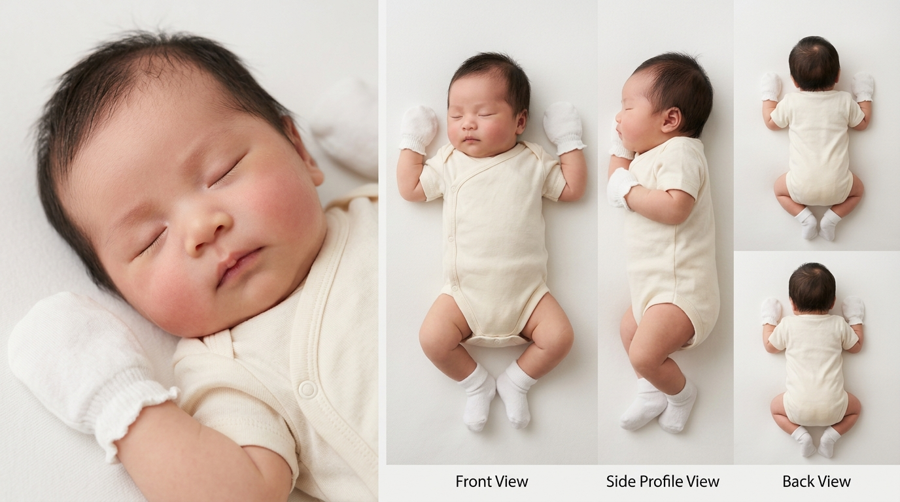
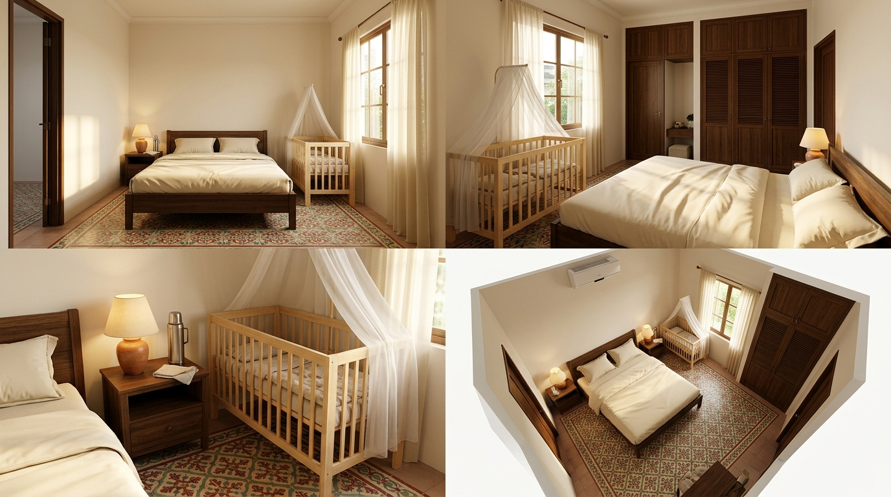
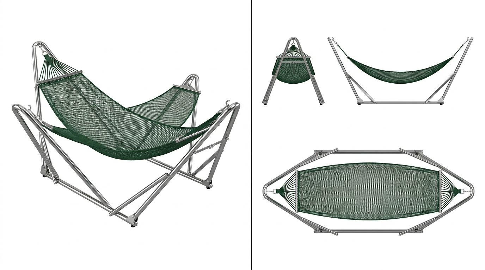
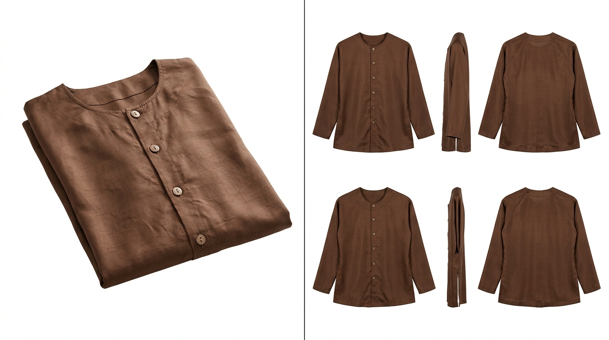
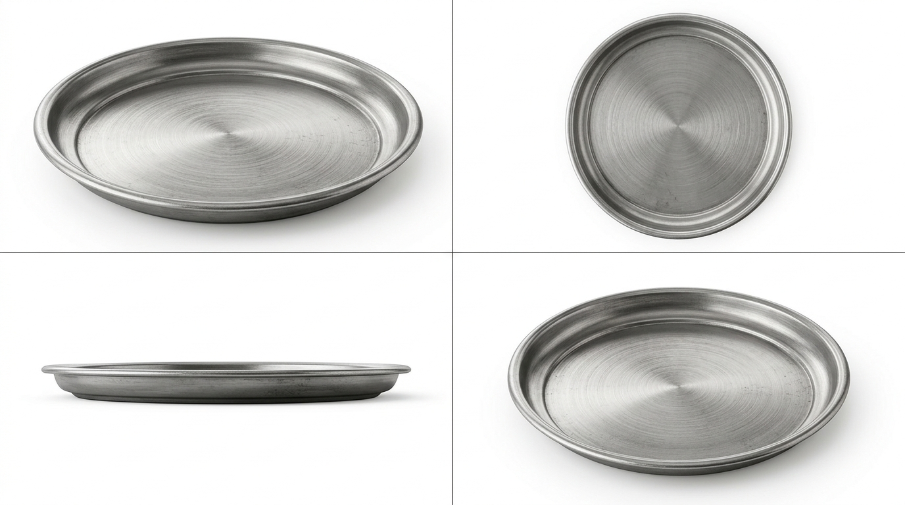
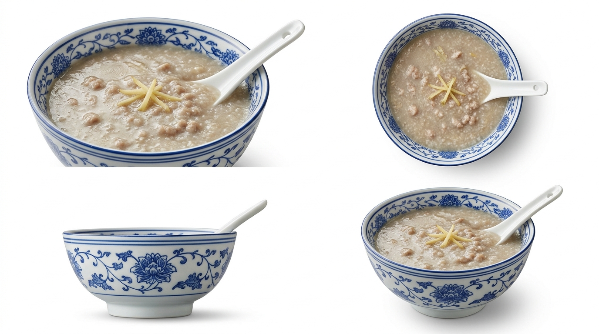
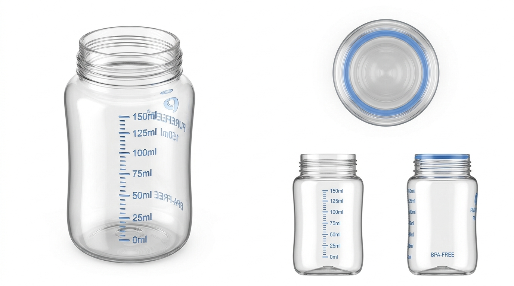

Tập 1: Bát Cháo Ở Cữ Chan Nước Mắt — Kịch bản đạo diễn điện ảnh 100 giây tái cấu trúc toàn diện với ngôn ngữ máy quay chọn theo từng cảnh (Track A một hơi liền, Track B cắt trên trục 180°, Track AB lai take + cắt). Nghệ thuật kể chuyện điện ảnh đỉnh cao, chạm đáy nỗi đau trầm cảm sau sinh, cú hook thị giác 3 giây nghẹn ngào (nước mắt rơi vỡ màng cháo nguội, bình hút sữa cạn khô) và hệ thống lời thoại móc nối hữu cơ (Call-and-Response) chan chứa tình cảm gia đình Nam Bộ giữa vợ chồng và mẹ chồng - nàng dâu.

Style: Modern K-Drama Premium Cinematography, high-key beauty illumination, luminescent skin rendering, soft pastel urban palette, creamy background bokeh, pristine digital finish. Layout: Character reference model sheet, 16:9 aspect ratio. Strictly four views only: one high-definition upper body close-up portrait of cu_tin on the left side of frame, plus exactly three parallel full-body views (front view, side profile view, and back view) on the right side. Exactly four views in total, zero extra sub-panels, no fifth view. Character: cu_tin, chubby soft cheeks, innocent peaceful sleeping face, fine soft wispy black hair, delicate nose, soft pink lips. Wearing an unbleached ivory organic cotton snap-button onesie, delicate soft mittens and socks. Rules: Peaceful sleeping pose on soft cotton mattress, empty hands, solid pure white studio background with soft diffuse warm lighting. Strictly four views only, zero extra fifth view, zero text, zero furniture in frame.

Style: Modern K-Drama Premium Cinematography, high-key beauty illumination, luminescent skin rendering, soft pastel urban palette, creamy background bokeh, architectural environment design sheet, 16:9 aspect ratio. Name: phong_cu — Master Bedroom at Dawn (Phòng Ngủ Master Ở Cữ Sài Gòn). Description: Authentic Vietnamese master bedroom prepared for postpartum mother and family in Ho Chi Minh City at early dawn, fully furnished with essential domestic set dressing: sturdy dark wooden queen bed with neat cream cotton bedding and pillows, light pine wood pine crib placed directly beside the bed with soft neutral linens and a light mosquito canopy, bedside nightstand with a warm lamp (soft amber glow) and small thermos flask, built-in wooden wardrobe, sheer ivory curtain filtering soft golden morning sunlight (warm early-dawn gold), wall-mounted air conditioner, and classic Southern Vietnamese patterned encaustic cement floor tiles. Lived-in, warm, peaceful domestic postpartum atmosphere, 8K architectural render. Format: Location concept design sheet, 16:9 landscape, multi-angle layout. At least 4 panels showing the same location from different camera angles or directions: wide establishing shot from doorway toward queen bed and pine crib, reverse angle looking from crib back to wooden closet, eye-level bedside detail close-up focusing on nightstand lamp and pine crib, and high-angle bird-eye architectural spatial layout. Panels show consistent dawn illumination. Focus entirely on full location views, with no written descriptions, detail labels, or floor plans. Rules: No characters or people - environment only. The location must look consistent and recognizable across all panels, with the same buildings, props, and layout. Do not include any text, letters, numbers, annotations, captions, dimension lines, arrows, labels, legends, zoning notes, or watermarks.

Style: Modern K-Drama Premium Cinematography, high-key beauty illumination, luminescent skin rendering, soft pastel urban palette, creamy background bokeh, mechanical domestic prop design sheet, 16:9 aspect ratio. Name: vong_xep — Traditional Southern Vietnamese Folding Steel Hammock (Võng Xếp Inox Nam Bộ). Category: Domestic / Furniture Relic. Description: Iconic Southern Vietnamese portable folding hammock (võng xếp), constructed from polished tubular chrome-plated stainless steel frame with three adjustable notch arms, sturdy hinge joints, and non-slip black rubber feet. Suspended between curved steel hooks is a double-layered emerald-green breathable polyester mesh hammock net with reinforced stitched webbing borders. Utilitarian, portable, durable — embodying the grandmother's rustic maternal care brought from rural Ben Tre to modern Saigon. Format: Prop design sheet, 16:9 landscape. Show only four views of the same prop only on pure solid white background (#FFFFFF): one primary hero 3D perspective view of the fully assembled hammock on the left, plus three orthographic views on the right (front elevation view, side profile view, and compact fully collapsed folded frame view with rolled mesh canvas). The hero view is the largest and clearest. Rules: Do not include any text, letters, numbers, annotations, captions, material swatches, dimension lines, arrows, close-up detail panels, or exploded views. Strictly four views only, zero extra sub-panels, zero brand logos, zero people in frame, no watermark.

Style: Modern K-Drama Premium Cinematography, high-key beauty illumination, luminescent skin rendering, soft pastel urban palette, creamy background bokeh, tactile textile prop design sheet, 16:9 aspect ratio. Name: ao_ba — Weathered Brown Silk Ba Ba Shirt (Áo Bà Ba Nâu Cũ Đượm Hơi Ấm). Category: Textile / Healing Relic. Description: Authentic traditional Southern Vietnamese brown silk shirt (áo bà ba) belonging to grandmother Má Ba. Crafted from soft raw shantung silk in an earthy chestnut brown hue, gently weathered by decades of hand-washing with river water, displaying delicate natural creases, soft organic drape, and subtle fraying at cuff edges. Traditional split mandarin collar, a vertical front column of small fabric-covered buttons, and two open patch pockets near the lower hem. Scented with betel nut warmth, folded neatly as a nesting cloth placed into the pine crib to comfort cu_tin. Format: Prop design sheet, 16:9 landscape. Show only four views of the same garment only on pure solid white background (#FFFFFF): one primary hero 3D draped perspective view on the left, plus three orthographic views on the right (front flat-lay view, back flat-lay view, and neatly folded compact square view). The hero view is the largest and clearest. Rules: Do not include any text, letters, numbers, annotations, captions, material swatches, dimension lines, arrows, close-up detail panels, or exploded views. Strictly four views only, zero mannequins, zero hangers, zero people in frame, no watermark.

Style: Modern K-Drama Premium Cinematography, high-key beauty illumination, luminescent skin rendering, soft pastel urban palette, creamy background bokeh, metallic prop design sheet, 16:9 aspect ratio. Name: mam_nhom — Traditional Round Spun-Aluminum Dining Tray (Mâm Nhôm Tròn Truyền Thống Độc Lập). Category: Culinary / Metallic Prop. Description: Traditional Vietnamese round spun-aluminum dining tray with rolled rim and matte circular brush finish, completely clean and empty with zero food. Durable, lightweight, reflecting soft silvery metallic highlights and delicate authentic contact scratches from domestic floor use. A versatile physical intermediary prop supporting bowls and bottles throughout domestic scenes. Format: Prop design sheet, 16:9 landscape. Show only four clean views of the exact same empty tray on pure solid white background (#FFFFFF): Top-Left is a hero 3D macro perspective view showing spun-aluminum metal texture with circular brush finish and rolled rim; Top-Right is a 90-degree top-down bird-eye view into the circular empty tray; Bottom-Left is an eye-level side profile view showing low-profile rim height; Bottom-Right is a 45-degree isometric perspective view. Rules: Do not include any text, letters, numbers, annotations, captions, material swatches, dimension lines, arrows, close-up detail panels, or exploded views. Strictly four views only, zero bowls, zero spoons, zero food, zero human hands, no watermark.

Style: Modern K-Drama Premium Cinematography, high-key beauty illumination, luminescent skin rendering, soft pastel urban palette, creamy background bokeh, authentic culinary prop design sheet, 16:9 aspect ratio. Name: bat_chao — Cold Postpartum Minced Pork Congee Bowl (Bát Cháo Thịt Nguội Ngắt Ở Cữ). Category: Culinary / Wound Relic. Description: A traditional Vietnamese rustic ceramic soup bowl with classic cobalt-blue floral glaze (bát gốm hoa lam), filled with cold congealed lean minced pork congee cooked with fine ginger slivers. The porridge has cooled completely, displaying a dull translucent congealed starch film skin formed across the cold surface, garnished with subtle julienned ginger, with a glossy white porcelain Chinese-style soup spoon resting on the rim. When a teardrop lands, it fractures the starch skin tension starkly. Format: Prop design sheet, 16:9 landscape. Show only four views of the same ceramic congee bowl only on pure solid white background (#FFFFFF): one primary hero 3D macro close-up view on the left showing dull translucent congealed starch film skin, plus three orthographic views on the right (top-down 90-degree bird-eye view, eye-level side profile view showing blue floral glaze, and 45-degree isometric perspective view). The hero view is the largest and clearest. Rules: Do not include any text, letters, numbers, annotations, captions, material swatches, dimension lines, arrows, close-up detail panels, or exploded views. Strictly four views only, zero other props, zero trays, zero bottles, zero human hands, zero chopsticks, zero watermark.

Style: Modern K-Drama Premium Cinematography, high-key beauty illumination, luminescent skin rendering, soft pastel urban palette, creamy background bokeh, medical prop design sheet, 16:9 aspect ratio. Name: binh_hut_sua — Empty Breast Pump Milk Collection Bottle 0ml (Bình Hút Sữa Cạn Khô). Category: Medical / Lactation Crisis Prop. Description: A medical-grade transparent BPA-free polypropylene electric breast pump milk collection bottle (150ml capacity) with crisp embossed blue milliliter graduation markings (20ml, 40ml, 60ml, 80ml, 100ml, 120ml, 140ml). The bottle is completely empty with zero milk, bone-dry inside, standing upright with a clinical white screw ring cap and silicone comfort flange beside it. A poignant visual emblem of maternal exhaustion and lactation inadequacy. Format: Prop design sheet, 16:9 landscape. Show only four views of the same transparent bottle only on pure solid white background (#FFFFFF): one primary hero 3D macro perspective view on the left, plus three orthographic views on the right (front elevation view, side profile view, and top-down view showing wide neck opening and screw threads). The hero view is the largest and clearest. Rules: Do not include any text, letters, numbers, annotations, captions, material swatches, dimension lines, arrows, close-up detail panels, or exploded views. Strictly four views only, zero bowls, zero trays, zero other props, zero human hands, zero text overlays, no watermark.
| [QUESTION] | Dramatic: Will Duyên admit how much she is hurting before her body admits it for her? Thematic: Is love that refuses to listen still love? — Side A (Má Ba): the old ways carried this family through hard years; being present is love. Side B (Duyên / Khang): Cu Tin's spine and a mother's body need listening, not rules. |
| [TRUTH] | Má Ba — Wound: thirty years ago hid her own postpartum collapse from her mother-in-law; widowed early, raised Khang in the hammock his father hung → Lie: "being needed means being obeyed" → Want: keep the grandson in the family hammock → Need: be needed by listening → Fear: becoming a guest in her son's house | Paradox: the loudest voice in the room is the one most afraid of being left. Mỹ Duyên — Wound: judged "vụng" from her first day as a daughter-in-law → Lie: "a good daughter-in-law never complains" → Want: keep the peace, hide the IV drip → Need: let the pain be seen → Fear: being the reason the family breaks | Paradox: hides the pain to protect the very bond the hiding is breaking. Minh Khang — Wound: grew up as his widowed mother's only support → Lie: "if I am gentle enough, nobody gets hurt" → Want: protect wife and son without wounding his mother → Need: choose clearly and say it → Fear: becoming the son who turned his mother away | Paradox: his gentleness delays the collapse it is meant to prevent. |
| [SPECIFIC] | 1 cold congee with a congealed skin · 2 a 0 ml pump bottle · 3 three nights without sleep · ★4 the folding hammock Khang's late father rocked him in · 5 IV tape and needle medical tape hidden with the other hand — and the faded scar of the same on Má Ba's wrist · 6 Má Ba's brown silk áo bà ba folded into the crib so cu_tin sleeps in her scent · 7 the "ầu ơ" lullaby Duyên practices in secret · 8 katuk soup with minced pork (canh bồ ngót) for milk · 9 Dì Tám's ginger wine rubbed on skin "to warm the bones" · 10 the belief that a crib "chills the little one's back" (nằm nôi lạnh lưng). |
| [CLICHÉ] | Villain mother-in-law → Subverted: her insistence grows from her own hidden collapse. · Husband fights his mother → Refused: Khang honors the memory, refuses in one line, then gives the hammock a new place. · Reconciliation by speech → Subverted: by recognition ("Hồi đó má cũng giấu…") and a scent in the crib. · Final line states the moral / title → Refused: Duyên asks to learn the lullaby; the title is kept by the image. · Cliffhanger = new villain → Kept, recast: the former opponent defends the crib with Khang's own words. |
| [LOOPS] | L1 Will help (and milk) come for Duyên? s01 → s09 · L2 Hammock or crib? s02–s03 → s07 (silk in the crib), s08 (hammock on the veranda) · L3 What is Duyên hiding? s01, s04 → s05 · L4 Why is Má Ba so hard? s02 (the glance at the tape), s03 (palm on the frame, the old scar) → s05 · L5 Can Duyên ever sing like Má Ba? s06 → s07, s09 · L6 Ginger wine vs. crib: s08 (Dì Tám waiting at the gate) → s10, then Episode 2. |
| [PREDICT] | P1 s01 | viewer predicts the mother-in-law will storm in and make it worse | → KEPT · P2 s02 | viewer predicts Má Ba never noticed the IV and her hardness is contempt | → BROKEN s05 | plant s01, s02, s03 · P3 s03 | viewer predicts Khang will fight his mother over the hammock | → BROKEN s03 | plant s01 · P4 s05 | viewer predicts Má Ba will apologize (A) or defend herself (B) | → BROKEN s05 | plant s03 — Option C: she confesses her own hidden collapse · P5 s09 | viewer predicts a closing line about no more tears (the title) | → BROKEN s09 | plant s06 · P6 s10 | viewer predicts the ginger-wine neighbor pulls Má Ba back to the old ways | → BROKEN s10 | plant s03, s07, s08 · P7 s10 | viewer predicts Cu Tin stays safe | → KEPT |
| [KNOW] | From s01 the viewer knows about the IV tape and believes Má Ba does not (irony: we dread her mocking it). In s02 her gaze snags on the taped wrist and hardens — the camera withholds why, so it reads as contempt. In s03 her own old scar is on screen, unexplained (camouflaged inside the hammock fight). In s05 the mode flips: she knew, because she once hid the same thing — irony becomes recognition. In s08 only Má Ba and the viewer see Dì Tám at the gate (suspense for s10). |
| [MISREAD] | Two-way. Duyên reads Má Ba's hardness as contempt for a "vụng" daughter-in-law; Má Ba reads Duyên's silence and the crib as a rejection of her ways. Blocked by Duyên's Lie ("a good daughter-in-law never complains") and Má Ba's denial (naming the tape means naming her own past). Each clarifying sentence costs a wound. Ends on screen in s05 by Má Ba's own choice to confess. |
| [TWIST] | Major: s05 — TW-04 Perspective + TW-16 Secret Connection (the same hidden wound, thirty years apart); plants: s01 tape, s02 glance, s03 scar. · Minor: s10 — TW-12 Status Inversion (the former opponent defends the crib with Khang's own words). · Cold water: s10, caused by Dì Tám planted at the gate in s08; family-drama scale (a neighbor and a bottle). |
| [COST] | Má Ba gives up the hammock's place beside the crib and her authority as "the one who knows"; Duyên gives up the mask of never complaining. |
| [DEBATE] | Should Duyên have hidden her pain to keep the peace — and who was right about the hammock? |
| [IMAGE] | Open: a tear breaks the cold skin of congee beside an empty bottle. Close: a hot spoonful of katuk soup, eyes glistening, not one tear falls into the bowl — Má Ba's silk asleep in the crib. |
| [STYLE & OPTICS] | Modern K-Drama Premium Cinematography, high-key beauty illumination, luminescent skin rendering, soft pastel urban palette, creamy background bokeh, elegant tracking camera motion, romantic atmospheric glow, pristine digital finish. |
| [CONTEXT] | phong_cu [100% Refer to image location_bedroom_4view.jpg], morning. Intimate Southern Vietnamese townhouse master bedroom with classic patterned encaustic cement floor tiles, sturdy dark wooden queen bed with white linen bedding, light pine wood crib placed directly beside the bed, warm golden morning sunlight streaming through sheer curtains, wooden doorframe leading to hallway. |
| [SUBJECT] | Mỹ Duyên [100% Appearance, attire, and facial features Refer to image 1], sitting on patterned floor tiles leaning against queen bed edge beside wooden pine crib, eyes glistening with heavy tears rolling down hollow cheeks, pale trembling fingers losing grip on porcelain spoon — the only Mỹ Duyên in frame. Minh Khang [100% Appearance, attire, and facial features Refer to image 2], dropping swiftly to both knees on floor tiles directly facing Mỹ Duyên, broad warm palms clasping her cold shaking hands against his chest with protective devotion — the only Minh Khang in frame. Cu Tin [100% Appearance, attire, and facial features Refer to image cu_tin_4view.jpg], resting peacefully inside the wooden pine crib on firm flat organic cotton mattress beside queen bed, breathing softly in calm rhythmic sleep with tiny fists curled beside soft cheeks — the only Cu Tin in frame. |
| [PROP / SURFACE] | bat_chao: cold postpartum congee bowl with congealed starch skin film on mam_nhom [100% Refer to image prop_chao_thit_4view.jpg]; binh_hut_sua: empty transparent milk collection bottle on mam_nhom [100% Refer to image prop_binh_sua_4view.jpg]; mam_nhom: circular aluminum tray on floor tiles with fallen porcelain spoon [100% Refer to image prop_mam_nhom_4view.jpg]; noi_go: stationary pine crib beside queen bed with soft blankets [100% Refer to image prop_crib_4view.jpg]; Patterned floor tiles. |
| [DIEGETIC SOUND] | Low mechanical hum of breast pump with empty suction clicks, heavy teardrop splashing on cold starch skin, porcelain spoon resting on aluminum tray, soft cotton rustle from wooden pine crib. |
| [TIMELINE SHOTS] | [00:00–00:10.0] Track A — Single Continuous Take (Downward Macro Insert, Pedestal Lift to Eye Level, Gentle Settle): [00:00.0–00:04.2] Downward Macro Hook & Fragile Release: The unbroken camera opens in a tight downward macro insert over the round aluminum tray: a bowl of cold postpartum congee displays a delicate congealed starch film skin, resting beside an empty transparent breast pump bottle without a single drop of milk (0ml). A heavy teardrop splashes down from above, puncturing and fracturing the surface tension of the congealed congee film. Slender pale trembling fingers lose grip, sending the porcelain spoon resting gently onto the aluminum tray. The camera initiates a smooth pedestal lift, rising up to eye level. [00:04.2–00:10.0] Solo Whisper & Silent Somatic Embrace: The pedestal lift settles before she speaks, framing Mỹ Duyên at eye level leaning weakly against the bed frame, lips parting in a fragile weeping whisper: “Anh ơi... vắt hoài hổng ra sữa... con đói quặn ruột...” Minh Khang drops swiftly onto both knees facing her, his warm palms enclosing her shaking cold fingers against his chest with protective tenderness. The camera eases gently back as dust motes float through warm sunbeams; beside the bed, cu_tin rests peacefully inside noi_go on the firm flat organic cotton mattress, chest rising and falling in calm rhythmic sleep through 00:10.0. |
Master-level cinematography and composition, fast-paced shot variation, atmospheric sound design. Track A — one continuous take, zero cuts. Modern K-Drama Premium Cinematography, high-key beauty illumination, luminescent skin rendering, soft pastel urban palette, creamy background bokeh, elegant tracking camera motion, romantic atmospheric glow, pristine digital finish, unbroken single-shot pedestal lift from downward macro insert to a frontal medium close-up easing into an intimate two-shot across ten seconds. [context]: phong_cu [100% Refer to image location_bedroom_4view.jpg], morning. Intimate Southern Vietnamese townhouse master bedroom with classic patterned encaustic cement floor tiles, sturdy dark wooden queen bed with white linen bedding, light pine wood crib placed directly beside the bed, warm golden morning sunlight streaming through sheer curtains, wooden doorframe leading to hallway. [subject]: my_duyen [100% Appearance, attire, and facial features Refer to image 1], minh_khang [100% Appearance, attire, and facial features Refer to image 2], cu_tin [100% Appearance, attire, and facial features Refer to image cu_tin_4view.jpg] [PROP]: bat_chao [100% Refer to image prop_chao_thit_4view.jpg]; binh_hut_sua [100% Refer to image prop_binh_sua_4view.jpg]; mam_nhom [100% Refer to image prop_mam_nhom_4view.jpg]; noi_go [100% Refer to image prop_crib_4view.jpg] Diegetic room acoustics: low mechanical hum of breast pump with empty suction clicks, heavy teardrop splashing on cold starch skin, porcelain spoon resting on aluminum tray, soft cotton rustle from wooden pine crib. [00:00–00:04.2] The unbroken camera opens in a tight downward macro insert over the round aluminum tray on the floor tiles between the queen bed and the wooden pine crib: a bowl of cold postpartum congee displays a delicate congealed starch film skin, resting beside an empty transparent breast pump bottle without a single drop of milk (0ml). my_duyen sits on the patterned floor tiles leaning back against the queen bed frame; in an exhausted physical state with trembling fingers, my_duyen loses grip on the white porcelain spoon as a heavy teardrop splashes down from above, puncturing the surface tension of the congealed congee film; the spoon settles onto the aluminum tray without breaking. On the spoon's contact the camera executes a gentle pedestal lift, rising upward toward my_duyen's face. [00:04.2–00:10.0] The pedestal lift settles before my_duyen speaks, landing at eye level on a frontal medium close-up: my_duyen leans weakly against the bed frame, hollow pale cheeks glistening with morning light and streaming tears, lips parting in trembling vulnerability to deliver dialogue: my_duyen whispers : “ Anh ơi... vắt hoài hổng ra sữa... con đói quặn ruột... ” (Voice of a 24-year-old Southern Vietnamese woman; trembling fragile Southern Vietnamese lip-sync, lips parting in tearful despair) minh_khang drops swiftly onto both knees on the patterned floor tiles facing my_duyen, broad warm palms clasping my_duyen's cold shaking hands against minh_khang's chest, resting a forehead gently against joined fingers in silent emotional shelter; beside the bed, cu_tin rests peacefully inside noi_go on the firm flat organic cotton mattress, chest rising and falling in calm rhythmic sleep, tiny fists curled gently beside soft cheeks through 00:10.0. Continuous fluid motion, realistic physics, zero morphing, one unbroken take. Spatial positions anchored. Do not generate subtitles, dialogue text, titles, timestamps, or written text. Do not render duplicate characters.
[HANDOVER STATE AT 00:10.0]: Active Characters: my_duyen, minh_khang, cu_tin Characters State at 00:10.0: - my_duyen: Sitting on patterned floor tiles leaning against queen bed edge, tear-stained cheeks, hands held firmly in minh_khang's grasp. - minh_khang: Kneeling on both knees on floor tiles directly facing my_duyen, clasping her hands to chest, forehead resting against their joined hands. - cu_tin: Resting safely and peacefully in the wooden pine crib on firm flat mattress, breathing softly in deep rhythmic sleep. Props State: - mam_nhom [100% Refer to image prop_mam_nhom_4view.jpg]: Resting on floor tiles beside my_duyen with fallen porcelain spoon. - bat_chao [100% Refer to image prop_chao_thit_4view.jpg]: Cold postpartum congee bowl with fractured starch film on aluminum tray. - binh_hut_sua [100% Refer to image prop_binh_sua_4view.jpg]: Transparent milk collection bottle standing completely empty on aluminum tray. - noi_go: Anchored fixed fixture inside phong_cu beside bed. Setting: phong_cu [100% Refer to image location_bedroom_4view.jpg] Dialogue Audit: my_duyen 12 words (solo whisper of deep vulnerability; silent protective embrace). Kinetic Momentum Bridge: The bedroom door pushes open in Scene 02 as footsteps enter carrying the folded hammock.
| [STYLE & OPTICS] | Modern K-Drama Premium Cinematography, high-key beauty illumination, luminescent skin rendering, soft pastel urban palette, creamy background bokeh, elegant tracking camera motion, romantic atmospheric glow, pristine digital finish. |
| [CONTEXT] | phong_cu doorway and room interior [100% Refer to image location_bedroom_4view.jpg], morning. Intimate Southern Vietnamese townhouse master bedroom with classic patterned encaustic cement floor tiles, sturdy dark wooden queen bed with white linen bedding, light pine wood crib placed directly beside the bed, warm golden morning sunlight streaming through sheer curtains, wooden doorframe leading to hallway. |
| [SUBJECT] | Má Ba [100% Appearance, attire, and facial features Refer to image 4], stepping through wooden doorway into phong_cu clutching folded steel hammock against chest, brow deeply furrowed with traditional maternal fret — the only Má Ba in frame. Minh Khang [100% Appearance, attire, and facial features Refer to image 2], springing up from floor tiles to standing position, spreading arms defensively between Má Ba and Mỹ Duyên — the only Minh Khang in frame. Mỹ Duyên [100% Appearance, attire, and facial features Refer to image 1], shrinking back on tiles beside pine crib, clutching crib rail — the only Mỹ Duyên in frame. Cu Tin [100% Appearance, attire, and facial features Refer to image cu_tin_4view.jpg], resting peacefully inside the wooden pine crib on firm flat organic cotton mattress beside queen bed, breathing softly in calm rhythmic sleep with tiny fists curled beside soft cheeks — the only Cu Tin in frame. |
| [PROP / SURFACE] | vong_xep: clutched in Má Ba's arms [100% Refer to image prop_hammock_4view.jpg]; noi_go: stationary in phong_cu beside queen bed [100% Refer to image prop_crib_4view.jpg]; mam_nhom: resting on floor tiles [100% Refer to image prop_mam_nhom_4view.jpg]; Patterned floor tiles; Wooden doorframe. |
| [DIEGETIC SOUND] | Heavy wooden door swinging open, rubber sandals shuffling on tiles, metallic clink of folding steel hammock frame. |
| [TIMELINE SHOTS] | [00:00–00:10.0] Track B — Multi-Shot Coverage on the 180° Axis (Low-Angle Doorway Intrusion, Cut to Protective Stand): [00:00–00:04.7] Shot 1 — Low-Angle OTS on the Doorway: From floor level behind Minh Khang's kneeling shoulder, the bedroom door pushes open. Má Ba enters the doorway carrying the folded stainless steel hammock frame clutched to her chest. Her eyes sweep from the empty bottle to the cold congee on the floor tray, brow furrowing with traditional maternal anxiety as she steps into the room: “Trời đất ơi! Bát cháo nguội ngắt... con nít ba tuần để đói hả?!” [00:04.7–00:10.0] Shot 2 — Cut on 180° Axis to Eye-Level Reverse: Cut to the reverse angle facing Minh Khang as he springs up from the floor tiles, stepping firmly between his mother and Mỹ Duyên with open palms raised in protective supplication: “Má nhỏ tiếng giùm con... Duyên thức trắng ba đêm kiệt sức rồi!” Minh Khang holds his ground; in the soft background, my_duyen sits propped against the bed frame; beside the bed, cu_tin rests peacefully inside noi_go on the firm flat organic cotton mattress, chest rising and falling in calm rhythmic sleep through 00:10.0. |
Master-level cinematography and composition, fast-paced shot variation, atmospheric sound design. Track B — multi-shot sequence cut on the 180-degree axis. Modern K-Drama Premium Cinematography, high-key beauty illumination, luminescent skin rendering, soft pastel urban palette, creamy background bokeh, elegant tracking camera motion, romantic atmospheric glow, pristine digital finish, low-angle over-the-shoulder entrance cutting to a reverse eye-level protective stand across ten seconds. [context]: phong_cu [100% Refer to image location_bedroom_4view.jpg], morning. Intimate Southern Vietnamese townhouse master bedroom with classic patterned encaustic cement floor tiles, sturdy dark wooden queen bed with white linen bedding, light pine wood crib placed directly beside the bed, warm golden morning sunlight streaming through sheer curtains, wooden doorframe leading to hallway. [subject]: ma_ba [100% Appearance, attire, and facial features Refer to image 4], minh_khang [100% Appearance, attire, and facial features Refer to image 2], my_duyen [100% Appearance, attire, and facial features Refer to image 1], cu_tin [100% Appearance, attire, and facial features Refer to image cu_tin_4view.jpg] [PROP]: vong_xep [100% Refer to image prop_hammock_4view.jpg]; mam_nhom [100% Refer to image prop_mam_nhom_4view.jpg]; noi_go [100% Refer to image prop_crib_4view.jpg] Diegetic room acoustics: heavy wooden door swinging open, rubber sandals shuffling on tiles, metallic clink of folding steel hammock frame. [00:00–00:04.7] From floor level, a low-angle over-the-shoulder shot past minh_khang's kneeling shoulder in foreground at screen-left: the wooden bedroom door pushes open; ma_ba stands at the wooden doorway at screen-right clutching the folded stainless steel hammock frame against chest; ma_ba takes one resolute step into the bedroom, eyes darting from the empty bottle to the cold congee tray on the floor tiles, brow furrowed in sharp traditional anxiety as ma_ba speaks: ma_ba snaps : “ Trời đất ơi! Cháo nguội ngắt... con nít để đói hả?! ” (Voice of a 56-year-old Southwestern Vietnamese mother; sharp urgent Southern Vietnamese lip-sync, brow heavily furrowed with fretful anxiety) Behind minh_khang, my_duyen flinches softly against the bed frame, drawing limbs inward. Beside the bed, the wooden pine crib stands steady with soft cotton bedding. [00:04.7–00:10.0] Cut to the reverse angle on the 180-degree axis facing minh_khang at eye level: minh_khang pushes up from the floor tiles and stands firmly between ma_ba and my_duyen; in an upright protective posture, minh_khang's open palms fill the space between ma_ba and the bed, brow furrowed in urgent filial pleading as minh_khang speaks: minh_khang replies : “ Má nhỏ tiếng giùm... Duyên thức ba đêm kiệt sức rồi! ” (Voice of a 27-year-old Southern Vietnamese man; breathless urgent Southern Vietnamese lip-sync, open palms raised in protective pleading) minh_khang stands firm as ma_ba's gaze wavers in momentary surprise; in the soft-focus background, my_duyen sits propped against the queen bed; beside the bed, cu_tin rests peacefully inside noi_go on the firm flat organic cotton mattress, chest rising and falling in calm rhythmic sleep through 00:10.0. Continuous fluid motion, realistic physics, zero morphing, two shots joined by one editorial cut. Spatial positions anchored across the cut. Do not generate subtitles, dialogue text, titles, timestamps, or written text. Do not render duplicate characters.
[HANDOVER STATE AT 00:20.0]: Active Characters: ma_ba, minh_khang, my_duyen, cu_tin Characters State at 00:20.0: - ma_ba: Standing inside the bedroom entrance holding folded steel hammock stand. - minh_khang: Standing between ma_ba and my_duyen, palms raised defensively. - my_duyen: Sitting on floor tiles beside pine crib, clutching crib rail. - cu_tin: Resting safely and peacefully in the wooden pine crib on firm flat mattress, breathing softly in calm sleep. Props State: - vong_xep: Gripped in ma_ba's grasp at doorway. - noi_go: Stationary beside queen bed. - mam_nhom: Resting on floor tiles near bed. Setting: phong_cu [100% Refer to image location_bedroom_4view.jpg] Dialogue Audit: ma_ba 12 words, minh_khang 12 words (24 words, ~5.5s of speech; rapid confrontation). Kinetic Momentum Bridge: ma_ba steps toward the crib to set down the hammock frame in Scene 03.
| [STYLE & OPTICS] | Modern K-Drama Premium Cinematography, high-key beauty illumination, luminescent skin rendering, soft pastel urban palette, creamy background bokeh, elegant tracking camera motion, romantic atmospheric glow, pristine digital finish. |
| [CONTEXT] | phong_cu bedside beside wooden crib [100% Refer to image location_bedroom_4view.jpg], morning. Intimate Southern Vietnamese townhouse master bedroom with classic patterned encaustic cement floor tiles, sturdy dark wooden queen bed with white linen bedding, light pine wood crib placed directly beside the bed, warm golden morning sunlight streaming through sheer curtains, wooden doorframe leading to hallway. |
| [SUBJECT] | Má Ba [100% Appearance, attire, and facial features Refer to image 4], standing centrally beside queen bed, placing stainless steel hammock frame onto floor tiles, weathered finger pointing toward wooden crib — the only Má Ba in frame. Minh Khang [100% Appearance, attire, and facial features Refer to image 2], standing upright between Má Ba and crib, holding his mother's sleeve with filial gentleness — the only Minh Khang in frame. Mỹ Duyên [100% Appearance, attire, and facial features Refer to image 1], shivering beside crib railing, face pale — the only Mỹ Duyên in frame. Cu Tin [100% Appearance, attire, and facial features Refer to image cu_tin_4view.jpg], resting peacefully inside the wooden pine crib on firm flat organic cotton mattress beside queen bed, breathing softly in calm rhythmic sleep with tiny fists curled beside soft cheeks — the only Cu Tin in frame. |
| [PROP / SURFACE] | vong_xep: placed on patterned floor tiles [100% Refer to image prop_hammock_4view.jpg]; noi_go: stationary beside queen bed [100% Refer to image prop_crib_4view.jpg]; Patterned floor tiles. |
| [DIEGETIC SOUND] | Metallic clink of hammock stand contacting tiles, rustle of silk shirt, soft breathing from crib. |
| [TIMELINE SHOTS] | [00:00–00:10.0] Track B — Multi-Shot Coverage on 180° Axis (Floor-Level Accusation, Cut on Tender Refusal): [00:00–00:05.0] Take 1 — Eye-Level Two-Shot on Claim of Tradition: Má Ba takes two resolute steps into room center, resting the folded steel hammock stand onto the tiles with a distinct metallic clank. Her weathered palm stays on the frame, pointing toward the modern pine crib: “Cái võng ba mầy đưa từ nhỏ, đem cháu tao bỏ xó nôi hả?!” Beside the pine crib, Duyên sits pale, fingers gripping the vertical balusters. [00:05.0–00:10.0] Cut on 180° Axis — Level Three-Quarter Two-Shot: Cut to reverse angle as Minh Khang steps forward and encloses his mother's pointing hand in both of his warm palms, lowering his gaze with filial reverence while standing unshakeable on medical care: “Cột sống thằng Tin non xèo... bác sĩ dặn nằm nôi phẳng má ơi!” Held inside Khang's clasp, Má Ba's stern jaw wavers; at floor level, Duyên begins to push up weakly with whitening knuckles; beside the bed, cu_tin rests peacefully inside noi_go on the firm flat organic cotton mattress, chest rising and falling in calm rhythmic sleep through 00:10.0. |
Master-level cinematography and composition, fast-paced shot variation, atmospheric sound design. Track B — multi-shot coverage on the 180-degree axis. Modern K-Drama Premium Cinematography, high-key beauty illumination, luminescent skin rendering, soft pastel urban palette, creamy background bokeh, elegant tracking camera motion, romantic atmospheric glow, pristine digital finish, eye-level accusation on tradition cutting to a level reverse two-shot on tender refusal across ten seconds. [context]: phong_cu [100% Refer to image location_bedroom_4view.jpg], morning. Intimate Southern Vietnamese townhouse master bedroom with classic patterned encaustic cement floor tiles, sturdy dark wooden queen bed with white linen bedding, light pine wood crib placed directly beside the bed, warm golden morning sunlight streaming through sheer curtains, wooden doorframe leading to hallway. [subject]: ma_ba [100% Appearance, attire, and facial features Refer to image 4], minh_khang [100% Appearance, attire, and facial features Refer to image 2], my_duyen [100% Appearance, attire, and facial features Refer to image 1], cu_tin [100% Appearance, attire, and facial features Refer to image cu_tin_4view.jpg] [PROP]: vong_xep [100% Refer to image prop_hammock_4view.jpg]; mam_nhom [100% Refer to image prop_mam_nhom_4view.jpg]; noi_go [100% Refer to image prop_crib_4view.jpg] Diegetic room acoustics: metallic clink of hammock stand contacting tiles, rustle of silk shirt, soft breathing from crib. [00:00–00:05.0] Eye-level medium two-shot: ma_ba stands at room center facing the pine crib; ma_ba places the folded steel hammock stand onto floor tiles with a sharp metallic clink, keeping one weathered palm resting on the steel frame while pointing toward the modern pine crib; with chin lifted in stubborn matriarchal conviction, ma_ba speaks: ma_ba snaps : “ Võng ba mầy đưa, đem cháu tao bỏ xó nôi hả?! ” (Voice of a 56-year-old Southwestern Vietnamese mother; unhurried proud Southern Vietnamese lip-sync, chin lifted staking family history) Beside the crib on floor tiles, my_duyen sits propped against the wooden crib slats, trembling fingers gripping the vertical balusters in helplessness. minh_khang stands attentive at bedside. [00:05.0–00:10.0] Cut to a level three-quarter front two-shot on the 180-degree axis: minh_khang steps between ma_ba and the pine crib; minh_khang reaches out with both warm palms and gently encloses ma_ba's pointing hand, mother and son face to face; with lowered eyes and filial tenderness wrapping scientific care, minh_khang speaks: minh_khang replies : “ Thằng Tin xương non xèo... bác sĩ dặn nằm nôi phẳng má! ” (Voice of a 27-year-old Southern Vietnamese man; soft resolute Southern Vietnamese lip-sync, eyes lowered, wrapping refusal in filial gentleness) Held in minh_khang's warm clasp, ma_ba's stubborn expression flickers with startled hesitation; at floor level, my_duyen pushes upward with whitening knuckles against the crib rail; beside the bed, cu_tin rests peacefully inside noi_go on the firm flat organic cotton mattress, chest rising and falling in calm rhythmic sleep through 00:10.0. Continuous fluid motion, realistic physics, zero morphing, two shots joined by one editorial cut. Spatial positions anchored across the cut. Do not generate subtitles, dialogue text, titles, timestamps, or written text. Do not render duplicate characters.
[HANDOVER STATE AT 00:30.0]: Active Characters: ma_ba, minh_khang, my_duyen, cu_tin Characters State at 00:30.0: - ma_ba: Standing in room center, hand held gently in minh_khang's palms. - minh_khang: Standing between ma_ba and crib, facing his mother. - my_duyen: Pushing up from floor tiles using the crib railing, pale and swaying. - cu_tin: Resting safely and peacefully in the wooden pine crib on firm flat mattress, breathing softly in calm sleep. Props State: - vong_xep: Standing upright on patterned floor tiles in center room. - noi_go: Stationary beside the bed. Setting: phong_cu [100% Refer to image location_bedroom_4view.jpg] Dialogue Audit: ma_ba 13 words, minh_khang 13 words (26 words, ~5.8s of speech). Kinetic Momentum Bridge: my_duyen's knees buckle as she tries to stand in Scene 04, triggering an immediate physical crisis.
| [STYLE & OPTICS] | Modern K-Drama Premium Cinematography, high-key beauty illumination, luminescent skin rendering, soft pastel urban palette, creamy background bokeh, elegant tracking camera motion, romantic atmospheric glow, pristine digital finish. |
| [CONTEXT] | phong_cu beside wooden crib [100% Refer to image location_bedroom_4view.jpg], morning. Slashed morning sunlight illuminating suspended dust motes, sudden physical crisis disrupting the verbal conflict. |
| [SUBJECT] | Mỹ Duyên [100% Appearance, attire, and facial features Refer to image 1], attempting to stand, knees suddenly buckling, sliding down onto patterned floor tiles beside wooden crib, pajama sleeve sliding back exposing medical tape on wrist — the only Mỹ Duyên in frame. Má Ba [100% Appearance, attire, and facial features Refer to image 4], standing in room center, stern scowl freezing instantly into wide-eyed shock — the only Má Ba in frame. Minh Khang [100% Appearance, attire, and facial features Refer to image 2], lunging downward across floor tiles to catch Mỹ Duyên's falling shoulders — the only Minh Khang in frame. Cu Tin [100% Appearance, attire, and facial features Refer to image cu_tin_4view.jpg], resting peacefully inside the wooden pine crib on firm flat organic cotton mattress beside queen bed, breathing softly in calm rhythmic sleep with tiny fists curled beside soft cheeks — the only Cu Tin in frame. |
| [PROP / SURFACE] | vong_xep: standing static on floor tiles [100% Refer to image prop_hammock_4view.jpg]; noi_go: stationary in room center [100% Refer to image prop_crib_4view.jpg]; Patterned floor tiles. |
| [DIEGETIC SOUND] | Sudden scuff of knees on tiles, sharp intake of breath, rustle of cotton fabric, dead breathless silence. |
| [TIMELINE SHOTS] | [00:00–00:10.0] Track A — Single Continuous Take (Physical Detonation to Somatic Shockwave Aftermath): [00:00.0–00:03.6] Physical Detonation & Exposure: At bed level, the unbroken camera tracks with Mỹ Duyên as she attempts to stand from the floor tiles to defuse the argument. Her knees instantly buckle from severe postpartum exhaustion; her torso pitches forward. Minh Khang lunges across the floor tiles, catching her falling shoulders against his chest in an instant reflex. In the sudden motion, Mỹ Duyên's left pajama sleeve slides backward up her forearm, exposing a neat square of white medical adhesive tape over a dark puncture mark on her pale wrist. [00:03.6–00:10.0] The Shockwave Aftermath & Somatic Silence: Dead breathless silence falls over the bedroom. Má Ba's pointing hand freezes in mid-air; her eyes widen in shock as her gaze locks onto the white clinic tape and needle mark. Minh Khang holds Mỹ Duyên's limp body securely, his chest heaving with shallow breaths as tears well in his eyes. Mỹ Duyên's head rests weakly against Khang's collarbone, eyes fluttering half-closed in total depletion. The silence thickens as morning sunbeams illuminate floating dust motes; beside the bed, cu_tin rests peacefully inside noi_go on the firm flat organic cotton mattress, chest rising and falling in calm rhythmic sleep through 00:10.0. |
Không có lời thoại phát ngôn. Cú ngã quỵ kiệt sức của Duyên và sự bàng hoàng đông cứng của Má Ba khi phát hiện vết băng dán y tế là ngôn ngữ điện ảnh tối thượng. Tiếng thở dốc nghẹn ngào và sự im lặng có trọng lượng hơn mọi lời nói.
Master-level cinematography and composition, fast-paced shot variation, atmospheric sound design. Track A — one continuous take, zero cuts. Modern K-Drama Premium Cinematography, high-key beauty illumination, luminescent skin rendering, soft pastel urban palette, creamy background bokeh, elegant tracking camera motion, romantic atmospheric glow, pristine digital finish, unbroken single-shot sudden physical collapse settling into a stunned somatic silence across ten seconds. [context]: phong_cu [100% Refer to image location_bedroom_4view.jpg], morning. Intimate Southern Vietnamese townhouse master bedroom with classic patterned encaustic cement floor tiles, sturdy dark wooden queen bed with white linen bedding, light pine wood crib placed directly beside the bed, warm golden morning sunlight streaming through sheer curtains, wooden doorframe leading to hallway. [subject]: my_duyen [100% Appearance, attire, and facial features Refer to image 1], minh_khang [100% Appearance, attire, and facial features Refer to image 2], ma_ba [100% Appearance, attire, and facial features Refer to image 4], cu_tin [100% Appearance, attire, and facial features Refer to image cu_tin_4view.jpg] [PROP]: vong_xep [100% Refer to image prop_hammock_4view.jpg]; noi_go [100% Refer to image prop_crib_4view.jpg] Diegetic room acoustics: sudden scuff of knees on tiles, sharp intake of breath, rustle of cotton fabric, dead breathless silence. [00:00–00:03.6] At bed level, the unbroken camera tracks with my_duyen as my_duyen attempts to push up from the patterned floor tiles using the crib rail: my_duyen's knees buckle from physical exhaustion, torso pitching forward toward the floor tiles; minh_khang lunges across the tiles, catching my_duyen's falling shoulders against minh_khang's chest in an instant reflex; in the sudden motion, my_duyen's left pajama sleeve slides backward up the forearm, exposing a neat square of white medical adhesive clinic tape over a dark purple needle puncture mark on the pale wrist in the foreground. [00:03.6–00:10.0] The camera eases into a stable low-angle two-shot framing the shockwave aftermath: ma_ba stands at room center, stern expression freezing in stunned disbelief as ma_ba's gaze locks onto the exposed medical tape; minh_khang holds my_duyen firmly against chest on the patterned floor tiles, breathing in ragged protective relief as tears well in eyes; my_duyen rests limp against minh_khang's collarbone with shallow breathing and closed eyelids, totally drained of stamina; dust motes drift through warm morning sunbeams in heavy breathless silence; beside the bed, cu_tin rests peacefully inside noi_go on the firm flat organic cotton mattress, chest rising and falling in calm rhythmic sleep through 00:10.0. Continuous fluid motion, realistic physics, zero morphing, one unbroken take. Spatial positions anchored throughout the take. Do not generate subtitles, dialogue text, titles, timestamps, or written text anywhere in the video. Do not generate spoken dialogue, lip movement matching speech, or voiceover. Do not render duplicate characters or extra props.
[HANDOVER STATE AT 00:40.0]: Active Characters: my_duyen, minh_khang, ma_ba, cu_tin Characters State at 00:40.0: - my_duyen: Slumped against minh_khang's chest on floor tiles, bandaged wrist exposed, breathing softly in fatigue. - minh_khang: Kneeling on floor tiles holding my_duyen tightly, tear-stained cheeks. - ma_ba: Standing in room center, frozen in shock staring at the medical tape. - cu_tin: Resting safely and peacefully in the wooden pine crib on firm flat mattress, undisturbed by the fall. Props State: - noi_go: Beside them on floor tiles. - vong_xep: Standing static on floor tiles. Setting: phong_cu [100% Refer to image location_bedroom_4view.jpg] Dialogue Audit: Model 0 Silence (0 words; physical shock and exposure). Kinetic Momentum Bridge: ma_ba slowly drops to her knees to touch the medical tape in Scene 05.
| [STYLE & OPTICS] | Modern K-Drama Premium Cinematography, high-key beauty illumination, luminescent skin rendering, soft pastel urban palette, creamy background bokeh, elegant tracking camera motion, romantic atmospheric glow, pristine digital finish. |
| [CONTEXT] | phong_cu floor beside wooden crib [100% Refer to image location_bedroom_4view.jpg], morning. Morning sunlight cutting across patterned floor tiles, catching white medical tape from clinic on Mỹ Duyên's wrist. |
| [SUBJECT] | Minh Khang [100% Appearance, attire, and facial features Refer to image 2], kneeling on floor tiles supporting Mỹ Duyên's shoulders, gaze tense and tearful — the only Minh Khang in frame. Mỹ Duyên [100% Appearance, attire, and facial features Refer to image 1], slumped weak against Minh Khang, pale face — the only Mỹ Duyên in frame. Má Ba [100% Appearance, attire, and facial features Refer to image 4], kneeling on floor tiles, weathered hand touching Mỹ Duyên's sleeve, eyes wide with stunned, wounded disbelief — the only Má Ba in frame. Cu Tin [100% Appearance, attire, and facial features Refer to image cu_tin_4view.jpg], resting peacefully inside the wooden pine crib on firm flat organic cotton mattress beside queen bed, breathing softly in calm rhythmic sleep with tiny fists curled beside soft cheeks — the only Cu Tin in frame. |
| [PROP / SURFACE] | vong_xep: standing static on floor tiles [100% Refer to image prop_hammock_4view.jpg]; noi_go: stationary beside bed [100% Refer to image prop_crib_4view.jpg]; Patterned floor tiles. |
| [DIEGETIC SOUND] | Trembling intake of breath, choked sob, floor tile contact, soft morning atmosphere. |
| [TIMELINE SHOTS] | [00:00–00:10.0] Track B — Multi-Shot Cut on 180° Axis (Discovery of the Tape, Cut to Desperate Confession): [00:00–00:04.9] Shot 1 — Over-The-Shoulder Medium Close-Up on the Bandaged Wrist: Má Ba slowly drops to her knees on the patterned floor tiles. Her weathered, calloused fingers reach out tremblingly and touch the edge of the medical tape on Duyên's pale wrist. Her voice cracks with wounded, bewildered shock: “Băng dán trạm xá đây nè... con đi truyền dịch hồi nào giấu tao?!” Duyên weakly flinches her wrist inward, tears rolling down her cheeks. [00:04.9–00:10.0] Shot 2 — Cut on 180° Axis to Frontal Medium Close-Up: Cut to the reverse angle facing Minh Khang as he holds Duyên tightly against his chest, tears finally breaking past his defense as he answers with raw urgency: “Nửa đêm Duyên sốt bốn mươi độ... nó cắn răng chịu không dám phiền má!” Holding Duyên, Khang's chin quivers; opposite the couple on the floor tiles, Má Ba freezes, the truth striking like a physical blow as her pride dissolves; beside the bed, cu_tin rests peacefully inside noi_go on the firm flat organic cotton mattress, chest rising and falling in calm rhythmic sleep through 00:10.0. |
Master-level cinematography and composition, fast-paced shot variation, atmospheric sound design. Track B — multi-shot sequence cut on the 180-degree axis. Modern K-Drama Premium Cinematography, high-key beauty illumination, luminescent skin rendering, soft pastel urban palette, creamy background bokeh, elegant tracking camera motion, romantic atmospheric glow, pristine digital finish, over-the-shoulder medium close-up on a bandaged wrist cutting to a reverse close-up of wounded realization across ten seconds. [context]: phong_cu [100% Refer to image location_bedroom_4view.jpg], morning. Intimate Southern Vietnamese townhouse master bedroom with classic patterned encaustic cement floor tiles, sturdy dark wooden queen bed with white linen bedding, light pine wood crib placed directly beside the bed, warm golden morning sunlight streaming through sheer curtains, wooden doorframe leading to hallway. [subject]: minh_khang [100% Appearance, attire, and facial features Refer to image 2], my_duyen [100% Appearance, attire, and facial features Refer to image 1], ma_ba [100% Appearance, attire, and facial features Refer to image 4], cu_tin [100% Appearance, attire, and facial features Refer to image cu_tin_4view.jpg] [PROP]: vong_xep [100% Refer to image prop_hammock_4view.jpg]; mam_nhom [100% Refer to image prop_mam_nhom_4view.jpg]; noi_go [100% Refer to image prop_crib_4view.jpg] Diegetic room acoustics: sharp intake of breath, rustle of cotton fabric, soft cotton rustle from bedside, heavy tense silence. [00:00–00:04.9] From behind ma_ba's shoulder in foreground at screen-right, an over-the-shoulder medium close-up toward the floor tiles: ma_ba slowly sinks to knees on patterned floor tiles; weathered trembling fingers reach forward and touch the edge of the white clinic tape on my_duyen's pale wrist; ma_ba's throat tightens in bewildered hurt as ma_ba speaks: ma_ba snaps : “ Băng dán trạm xá đây nè... truyền dịch hồi nào giấu tao?! ” (Voice of a 56-year-old Southwestern Vietnamese mother; choked trembling Southern Vietnamese lip-sync, fingers touching medical tape) my_duyen slumps weak against minh_khang, flinching wrist inward as tears roll down hollow cheeks. Beside the bed, the wooden pine crib rests quietly in the morning light. [00:04.9–00:10.0] Cut to the reverse eye-level shot on the 180-degree axis facing minh_khang: minh_khang holds my_duyen tightly against chest on the patterned floor tiles; tears stream down minh_khang's face as anguish and protective love break forth to deliver dialogue: minh_khang cries : “ Nửa đêm Duyên sốt cao... cắn răng chịu không dám phiền má! ” (Voice of a 28-year-old Southern Vietnamese man; anguished urgent Southern Vietnamese lip-sync, clutching wife firmly) Opposite the couple on the floor tiles, ma_ba freezes in mid-motion, weathered face softening as matriarchal pride dissolves in shock; beside the bed, cu_tin rests peacefully inside noi_go on the firm flat organic cotton mattress, chest rising and falling in calm rhythmic sleep through 00:10.0. Continuous fluid motion, realistic physics, zero morphing, two shots joined by one editorial cut. Spatial positions anchored across the cut. Do not generate subtitles, dialogue text, titles, timestamps, or written text. Do not render duplicate characters.
[HANDOVER STATE AT 00:50.0]: Active Characters: ma_ba, minh_khang, my_duyen, cu_tin Characters State at 00:50.0: - ma_ba: Kneeling on floor tiles, hand resting near my_duyen's wrist, face softened in profound shock. - minh_khang: Supporting my_duyen, looking tearfully at ma_ba. - my_duyen: Slumped against minh_khang, bandaged wrist visible, weeping quietly. - cu_tin: Resting safely and peacefully in the wooden pine crib on firm flat mattress, breathing softly in calm sleep. Props State: - noi_go: Stationary beside the bed. - vong_xep: Standing static on floor tiles. Setting: phong_cu [100% Refer to image location_bedroom_4view.jpg] Dialogue Audit: ma_ba 13 words, minh_khang 14 words (27 words, ~6.0s of speech; anagnorisis revelation). Kinetic Momentum Bridge: ma_ba turns her own wrist inward in Scene 06, revealing her 30-year-old needle scar.
| [STYLE & OPTICS] | Modern K-Drama Premium Cinematography, high-key beauty illumination, luminescent skin rendering, soft pastel urban palette, creamy background bokeh, elegant tracking camera motion, romantic atmospheric glow, pristine digital finish. |
| [CONTEXT] | phong_cu floor beside wooden crib [100% Refer to image location_bedroom_4view.jpg], morning. Warm amber morning sunbeam falling across weathered hands, illuminating a 30-year-old faded IV scar on Má Ba's wrist. |
| [SUBJECT] | Má Ba [100% Appearance, attire, and facial features Refer to image 4], kneeling on patterned floor tiles, turning her own right wrist inward showing an old faded needle scar, weathered eyes brimming with tears — the only Má Ba in frame. Mỹ Duyên [100% Appearance, attire, and facial features Refer to image 1], sitting propped against Minh Khang, eyes wide with tearful disbelief and relief — the only Mỹ Duyên in frame. Minh Khang [100% Appearance, attire, and facial features Refer to image 2], supporting Mỹ Duyên with tender filial reverence — the only Minh Khang in frame. Cu Tin [100% Appearance, attire, and facial features Refer to image cu_tin_4view.jpg], resting peacefully inside the wooden pine crib on firm flat organic cotton mattress beside queen bed, breathing softly in calm rhythmic sleep with tiny fists curled beside soft cheeks — the only Cu Tin in frame. |
| [PROP / SURFACE] | noi_go: stationary beside queen bed [100% Refer to image prop_crib_4view.jpg]; Patterned floor tiles; Queen bed. |
| [DIEGETIC SOUND] | Heavy quiet breath, soft rustle of silk fabric, peaceful morning room tone. |
| [TIMELINE SHOTS] | [00:00–00:10.0] Track A — Single Continuous Take (Macro Glide on the 30-Year Scar to Warm Enfoldment): [00:00.0–00:04.0] Macro Glide on the Echo Wound: At floor eye level, the unbroken camera glides intimately past Duyên and Khang onto Má Ba sitting on the floor tiles. Má Ba's weathered right hand trembles as she turns her own wrist inward: there, pale and faded under thirty years of sun and labor, is an old faint IV needle scar from her own youth when she raised Khang alone after her husband died. [00:04.0–00:10.0] Raspy Recognition & Living Warmth: The camera settles at eye level on Má Ba's weathered countenance, tears glistening in the deep creases beside her eyes, all harshness drained into profound maternal recognition: “Dại quá con ơi... hồi đó sanh thằng Khang... má cũng giấu y chang mầy...” Má Ba's rough palm reaches forward and gently enfolds Duyên's bandaged wrist, not in anger, but in the profound warmth of shared female suffering; Duyên looks up, her eyes wide with tearful disbelief and relief; beside the bed, cu_tin rests peacefully inside noi_go on the firm flat organic cotton mattress, chest rising and falling in calm rhythmic sleep through 00:10.0. |
Master-level cinematography and composition, fast-paced shot variation, atmospheric sound design. Track A — one continuous take, zero cuts. Modern K-Drama Premium Cinematography, high-key beauty illumination, luminescent skin rendering, soft pastel urban palette, creamy background bokeh, elegant tracking camera motion, romantic atmospheric glow, pristine digital finish, unbroken single-shot intimate tracking glide on generational recognition across ten seconds. [context]: phong_cu [100% Refer to image location_bedroom_4view.jpg], morning. Intimate Southern Vietnamese townhouse master bedroom with classic patterned encaustic cement floor tiles, sturdy dark wooden queen bed with white linen bedding, light pine wood crib placed directly beside the bed, warm golden morning sunlight streaming through sheer curtains, wooden doorframe leading to hallway. [subject]: ma_ba [100% Appearance, attire, and facial features Refer to image 4], my_duyen [100% Appearance, attire, and facial features Refer to image 1], minh_khang [100% Appearance, attire, and facial features Refer to image 2], cu_tin [100% Appearance, attire, and facial features Refer to image cu_tin_4view.jpg] [PROP]: noi_go [100% Refer to image prop_crib_4view.jpg] Diegetic room acoustics: heavy quiet breath, soft rustle of silk fabric, peaceful morning room tone. [00:00–00:04.0] At floor eye level, the unbroken camera glides intimately past my_duyen and minh_khang toward ma_ba kneeling on the patterned floor tiles: ma_ba's weathered right hand trembles gently as ma_ba turns the inner wrist inward; there, pale and faded under thirty years of labor, rests an old faint IV needle scar from ma_ba's own youth in the morning sunbeam; seeing the identical sacrifice across generations, ma_ba's stern features soften into maternal compassion. [00:04.0–00:10.0] The camera settles before ma_ba speaks, framing ma_ba's weathered countenance at eye level: tears glisten in aged eyes as lips part in a raspy, cracked whisper of profound recognition: ma_ba whispers : “ Dại quá con ơi... hồi đó sanh thằng Khang... má cũng giấu y chang mầy... ” (Voice of a 56-year-old Southwestern Vietnamese mother; raspy cracked Southern Vietnamese lip-sync, tears glistening in aged eyes) ma_ba's calloused palm reaches forward and gently enfolds my_duyen's bandaged wrist, holding it with protective maternal warmth; my_duyen looks up with eyes wide in tearful relief as minh_khang smiles through tears; beside the bed, cu_tin rests peacefully inside noi_go on the firm flat organic cotton mattress, chest rising and falling in calm rhythmic sleep through 00:10.0. Continuous fluid motion, realistic physics, zero morphing, one unbroken take. Spatial positions anchored throughout the take. Do not generate subtitles, dialogue text, titles, timestamps, or written text. Do not render duplicate characters.
[HANDOVER STATE AT 01:00.0]: Active Characters: ma_ba, my_duyen, minh_khang, cu_tin Characters State at 01:00.0: - ma_ba: Kneeling on floor tiles, holding my_duyen's bandaged wrist with tender maternal warmth. - my_duyen: Leaning against minh_khang, tearful relief on pale face. - minh_khang: Supporting my_duyen, smiling through tears. - cu_tin: Resting safely and peacefully in pine crib, breathing rhythmically in deep sleep. Props State: - noi_go: Stationary beside the bed. Setting: phong_cu [100% Refer to image location_bedroom_4view.jpg] Dialogue Audit: ma_ba 14 words (solo whisper of generational recognition; shared female healing). Kinetic Momentum Bridge: ma_ba stands up to unbutton her brown silk áo bà ba in Scene 07.
| [STYLE & OPTICS] | Modern K-Drama Premium Cinematography, high-key beauty illumination, luminescent skin rendering, soft pastel urban palette, creamy background bokeh, elegant tracking camera motion, romantic atmospheric glow, pristine digital finish. |
| [CONTEXT] | phong_cu beside wooden pine crib [100% Refer to image location_bedroom_4view.jpg], morning. Soft golden morning light illuminating the pine crib, sacred reconciliation between tradition and modern science. |
| [SUBJECT] | Má Ba [100% Appearance, attire, and facial features Refer to image 4], standing gently beside pine crib, folding brown silk shirt into crib beside baby with reverent care — the only Má Ba in frame. Minh Khang [100% Appearance, attire, and facial features Refer to image 2], supporting Mỹ Duyên on queen bed mattress edge — the only Minh Khang in frame. Mỹ Duyên [100% Appearance, attire, and facial features Refer to image 1], watching Má Ba's hands with glistening eyes of filial gratitude — the only Mỹ Duyên in frame. Cu Tin [100% Appearance, attire, and facial features Refer to image cu_tin_4view.jpg], resting peacefully inside the wooden pine crib on firm flat organic cotton mattress beside queen bed, breathing softly in calm rhythmic sleep with tiny fists curled beside soft cheeks — the only Cu Tin in frame. |
| [PROP / SURFACE] | ao_ba: folded neatly inside pine crib [100% Refer to image prop_baba_shirt_4view.jpg]; noi_go: stationary beside queen bed [100% Refer to image prop_crib_4view.jpg]; Patterned floor tiles; Wooden crib railing. |
| [DIEGETIC SOUND] | Soft rustle of raw silk fabric, gentle breathing from the pine crib, tender whispered lullaby fragment. |
| [TIMELINE SHOTS] | [00:00–00:10.0] Track A — Single Continuous Take (Sacred Action to Tender Cradle Lullaby): [00:00.0–00:04.8] Sacred Maternal Action: Standing up from the floor tiles with measured gentleness, Má Ba slips off her weathered brown silk áo bà ba, scented with betel nut, river water, and maternal warmth. She steps to the side of the wooden pine crib, folding the soft silk garment into a neat cushion. [00:04.8–00:10.0] Whispered Blessing & Living Harmony: With tender reverence, Má Ba places the folded brown silk shirt into the pine crib beside Cu Tin's organic cotton mattress. Cu Tin's tiny nose twitches catching the familiar grandmotherly scent, and his small fist uncurls and rests gently over the silk fabric, sleeping in complete peace. Má Ba leans over the railing, whispering softly: “Nằm nôi cho thẳng lưng nghen cháu... có hơi nội ở kề bên nè...” Behind her on the bed, Khang gently supports Duyên as Duyên watches with glistening eyes of gratitude; beside the bed, cu_tin rests peacefully inside noi_go on the firm flat organic cotton mattress, chest rising and falling in calm rhythmic sleep through 00:10.0. |
Master-level cinematography and composition, fast-paced shot variation, atmospheric sound design. Track A — one continuous take, zero cuts. Modern K-Drama Premium Cinematography, high-key beauty illumination, luminescent skin rendering, soft pastel urban palette, creamy background bokeh, elegant tracking camera motion, romantic atmospheric glow, pristine digital finish, unbroken single-shot slow glide framing a sacred maternal gesture across ten seconds. [context]: phong_cu [100% Refer to image location_bedroom_4view.jpg], morning. Intimate Southern Vietnamese townhouse master bedroom with classic patterned encaustic cement floor tiles, sturdy dark wooden queen bed with white linen bedding, light pine wood crib placed directly beside the bed, warm golden morning sunlight streaming through sheer curtains, wooden doorframe leading to hallway. [subject]: ma_ba [100% Appearance, attire, and facial features Refer to image 4], cu_tin [100% Appearance, attire, and facial features Refer to image cu_tin_4view.jpg], minh_khang [100% Appearance, attire, and facial features Refer to image 2], my_duyen [100% Appearance, attire, and facial features Refer to image 1] [PROP]: ao_ba [100% Refer to image prop_baba_shirt_4view.jpg]; noi_go [100% Refer to image prop_crib_4view.jpg] Diegetic room acoustics: soft rustle of raw silk fabric, gentle breathing from the pine crib, tender whispered lullaby fragment. [00:00–00:04.8] Rising gently from the floor tiles, ma_ba steps beside the wooden pine crib holding the weathered brown silk shirt; ma_ba folds the soft brown silk garment into a neat flat cushion with reverent care; leaning over the crib railing, ma_ba places the folded silk shirt gently onto the firm organic cotton mattress beside cu_tin; cu_tin stirs softly in sleep, inhaling the familiar betel-nut grandmotherly scent, tiny fist uncurling to rest against the warm silk fabric. [00:04.8–00:10.0] The camera settles on ma_ba leaning tenderly over the pine crib railing, eyes brimming with quiet grandmotherly affection, lips parting in a soft whisper to deliver dialogue: ma_ba whispers : “ Nằm nôi cho thẳng lưng nghen cháu... có hơi nội ở kề bên nè... ” (Voice of a 56-year-old Southwestern Vietnamese mother; tender whispered Southern Vietnamese lip-sync, leaning over crib) Behind ma_ba on the queen bed edge, minh_khang supports my_duyen; my_duyen watches ma_ba's gentle hands with glistening eyes of filial gratitude; beside the bed, cu_tin rests peacefully inside noi_go on the firm flat organic cotton mattress, chest rising and falling in calm rhythmic sleep through 00:10.0. Continuous fluid motion, realistic physics, zero morphing, one unbroken take. Spatial positions anchored throughout the take. Do not generate subtitles, dialogue text, titles, timestamps, or written text. Do not render duplicate characters.
[HANDOVER STATE AT 01:10.0]: Active Characters: ma_ba, minh_khang, my_duyen, cu_tin Characters State at 01:10.0: - ma_ba: Standing beside pine crib, hands resting gently on crib railing. - minh_khang: Supporting my_duyen on queen bed edge. - my_duyen: Sitting on queen bed edge, tearful gratitude on face. - cu_tin: Resting safely in pine crib with folded silk shirt, breathing softly. Props State: - ao_ba: Folded inside pine crib beside cu_tin. - noi_go: Stationary beside the bed. Setting: phong_cu [100% Refer to image location_bedroom_4view.jpg] Dialogue Audit: ma_ba 14 words (tender whisper of protective care; reconciliation through action). Kinetic Momentum Bridge: minh_khang lifts the folding hammock to carry it toward the veranda in Scene 08.
| [STYLE & OPTICS] | Modern K-Drama Premium Cinematography, high-key beauty illumination, luminescent skin rendering, soft pastel urban palette, creamy background bokeh, elegant tracking camera motion, romantic atmospheric glow, pristine digital finish. |
| [CONTEXT] | phong_cu doorway looking toward sunlit hallway [100% Refer to image location_bedroom_4view.jpg], morning. Bright morning sunlight meeting bedroom threshold, domestic harmony and filial respect. |
| [SUBJECT] | Minh Khang [100% Appearance, attire, and facial features Refer to image 2], lifting folded steel hammock frame, smiling with filial relief — the only Minh Khang in frame. Má Ba [100% Appearance, attire, and facial features Refer to image 4], placing gentle hand on Minh Khang's arm, face warm and relaxed — the only Má Ba in frame. Mỹ Duyên [100% Appearance, attire, and facial features Refer to image 1], resting peacefully on bed — the only Mỹ Duyên in frame. Cu Tin [100% Appearance, attire, and facial features Refer to image cu_tin_4view.jpg], resting peacefully inside the wooden pine crib on firm flat organic cotton mattress beside queen bed, breathing softly in calm rhythmic sleep with tiny fists curled beside soft cheeks — the only Cu Tin in frame. |
| [PROP / SURFACE] | vong_xep: lifted in Minh Khang's arms [100% Refer to image prop_hammock_4view.jpg]; noi_go: stationary beside bed [100% Refer to image prop_crib_4view.jpg]; Patterned floor tiles; Wooden doorframe. |
| [DIEGETIC SOUND] | Light metallic chime of hammock frame lifted, soft footsteps moving toward hallway, quiet domestic harmony. |
| [TIMELINE SHOTS] | [00:00–00:10.0] Track B — Multi-Shot Cut on 180° Axis (Re-allocating the Relic Prop): [00:00–00:05.2] Shot 1 — Eye-Level Medium Shot at Doorway: Minh Khang bends down and lifts the folded stainless steel hammock frame into his arms. Má Ba turns to her son, placing a gentle hand on his shoulder, directing the relic to its rightful place of honor: “Đem ra hàng ba mắc nghen con... trưa má nằm canh chừng!” Khang nods, a bright smile of filial relief washing over his tired face. [00:05.2–00:10.0] Shot 2 — Cut on 180° Axis to Reverse Angle: Cut to reverse angle looking past the bedroom doorway into the hallway: Minh Khang carries the folded steel hammock out toward the sunlit veranda, stepping lightly: “Dạ má! Con mắc ngoài hiên đón gió... để má nghỉ ngơi nghen!” In the bedroom background, Duyên rests peacefully propped against bed pillows, watching her husband and mother-in-law with quiet serenity; beside the bed, cu_tin rests peacefully inside noi_go on the firm flat organic cotton mattress, chest rising and falling in calm rhythmic sleep through 00:10.0. |
Master-level cinematography and composition, fast-paced shot variation, atmospheric sound design. Track B — multi-shot coverage on the 180-degree axis. Modern K-Drama Premium Cinematography, high-key beauty illumination, luminescent skin rendering, soft pastel urban palette, creamy background bokeh, elegant tracking camera motion, romantic atmospheric glow, pristine digital finish, filial gesture at doorway cutting to a reverse tracking shot toward the veranda across ten seconds. [context]: phong_cu [100% Refer to image location_bedroom_4view.jpg], morning. Intimate Southern Vietnamese townhouse master bedroom with classic patterned encaustic cement floor tiles, sturdy dark wooden queen bed with white linen bedding, light pine wood crib placed directly beside the bed, warm golden morning sunlight streaming through sheer curtains, wooden doorframe leading to hallway. [subject]: ma_ba [100% Appearance, attire, and facial features Refer to image 4], minh_khang [100% Appearance, attire, and facial features Refer to image 2], my_duyen [100% Appearance, attire, and facial features Refer to image 1], cu_tin [100% Appearance, attire, and facial features Refer to image cu_tin_4view.jpg] [PROP]: vong_xep [100% Refer to image prop_hammock_4view.jpg]; noi_go [100% Refer to image prop_crib_4view.jpg] Diegetic room acoustics: light metallic chime of hammock frame lifted, soft footsteps moving toward hallway, quiet domestic harmony. [00:00–00:05.2] Eye-level medium shot at the bedroom doorway: minh_khang lifts the folded stainless steel hammock frame into arms with respectful care; ma_ba turns to minh_khang at screen-right, resting a gentle weathered palm on minh_khang's shoulder, face filled with maternal calm as ma_ba speaks: ma_ba says : “ Đem ra hàng ba mắc nghen... trưa má nằm canh chừng! ” (Voice of a 56-year-old Southwestern Vietnamese mother; warm calm Southern Vietnamese lip-sync, hand resting on son's shoulder) minh_khang nods in filial happiness, eyes crinkling with relief. In the room background, my_duyen rests against the queen bed pillows in serenity. [00:05.2–00:10.0] Cut to the reverse angle looking toward the bright hallway on the 180-degree axis: minh_khang turns and walks lightly through the doorway carrying the folded steel hammock toward the sunlit veranda, turning back slightly to answer: minh_khang replies : “ Dạ má! Con mắc ngoài hiên... để má nằm đón gió mát! ” (Voice of a 27-year-old Southern Vietnamese man; bright respectful Southern Vietnamese lip-sync, carrying hammock toward veranda) ma_ba steps toward the bedside to care for my_duyen; beside the bed, cu_tin rests peacefully inside noi_go on the firm flat organic cotton mattress, chest rising and falling in calm rhythmic sleep through 00:10.0. Continuous fluid motion, realistic physics, zero morphing, two shots joined by one editorial cut. Spatial positions anchored across the cut. Do not generate subtitles, dialogue text, titles, timestamps, or written text. Do not render duplicate characters.
[HANDOVER STATE AT 01:20.0]: Active Characters: ma_ba, minh_khang, my_duyen, cu_tin Characters State at 01:20.0: - ma_ba: Standing beside queen bed, looking lovingly at my_duyen. - minh_khang: Exited toward the hallway carrying the folded steel hammock. - my_duyen: Sitting propped against queen bed headboard, peaceful expression. - cu_tin: Resting safely in pine crib, breathing rhythmically. Props State: - vong_xep: Carried outside toward the veranda. - noi_go: Stationary beside bed. Setting: phong_cu [100% Refer to image location_bedroom_4view.jpg] Dialogue Audit: ma_ba 12 words, minh_khang 12 words (24 words, ~5.5s of speech; filial resolution). Kinetic Momentum Bridge: ma_ba sits on the bed edge holding a steaming bowl of canh bồ ngót in Scene 09.
| [STYLE & OPTICS] | Modern K-Drama Premium Cinematography, high-key beauty illumination, luminescent skin rendering, soft pastel urban palette, creamy background bokeh, elegant tracking camera motion, romantic atmospheric glow, pristine digital finish. |
| [CONTEXT] | phong_cu bedside on queen bed [100% Refer to image location_bedroom_4view.jpg], morning. Golden amber morning sunlight enveloping the bedside, delicate steam rising from freshly cooked katuk soup. |
| [SUBJECT] | Má Ba [100% Appearance, attire, and facial features Refer to image 4], sitting on bed edge beside Mỹ Duyên, holding steaming soup bowl, blowing gently on spoon — the only Má Ba in frame. Mỹ Duyên [100% Appearance, attire, and facial features Refer to image 1], sitting propped on mattress, swallowing warm broth with soft tearful smile — the only Mỹ Duyên in frame. Cu Tin [100% Appearance, attire, and facial features Refer to image cu_tin_4view.jpg], resting peacefully inside the wooden pine crib on firm flat organic cotton mattress beside queen bed, breathing softly in calm rhythmic sleep with tiny fists curled beside soft cheeks — the only Cu Tin in frame. |
| [PROP / SURFACE] | bat_chao: steaming ceramic soup bowl of katuk soup [100% Refer to image prop_chao_thit_4view.jpg]; noi_go: stationary beside bed [100% Refer to image prop_crib_4view.jpg]; Queen bed mattress. |
| [DIEGETIC SOUND] | Gentle clinking of porcelain soup spoon, soft blowing of breath over hot broth, warm domestic swallowing. |
| [TIMELINE SHOTS] | [00:00–00:10.0] Track A — Single Continuous Take (Lyrical Nourishment & The Living Title): [00:00.0–00:04.8] Lyrical Nourishment: At bed eye level, the unbroken camera frames Má Ba sitting on the edge of the queen bed beside Mỹ Duyên, holding a warm porcelain bowl of freshly cooked katuk soup with lean minced pork, delicate steam rising in the golden morning light. Má Ba blows gently on a spoonful of green broth, offering it to Duyên's lips: “Húp miếng canh bồ ngót nóng này... cho mau lại sức nghen con...” [00:04.8–00:10.0] The Living Title — Cơm Không Chan Nước Mắt: Mỹ Duyên leans forward and swallows the warm broth; a rosy flush returns to her pale cheeks. A single tear shines in the corner of her eye, but she blinks and smiles softly—not one drop falls into the bowl. Má Ba gently dabs the moisture from Duyên's temple with the corner of her sleeve; beside the bed, cu_tin rests peacefully inside noi_go on the firm flat organic cotton mattress, chest rising and falling in calm rhythmic sleep through 00:10.0. |
Master-level cinematography and composition, fast-paced shot variation, atmospheric sound design. Track A — one continuous take, zero cuts. Modern K-Drama Premium Cinematography, high-key beauty illumination, luminescent skin rendering, soft pastel urban palette, creamy background bokeh, elegant tracking camera motion, romantic atmospheric glow, pristine digital finish, unbroken single-shot slow intimate push-in on maternal nourishment across ten seconds. [context]: phong_cu [100% Refer to image location_bedroom_4view.jpg], morning. Intimate Southern Vietnamese townhouse master bedroom with classic patterned encaustic cement floor tiles, sturdy dark wooden queen bed with white linen bedding, light pine wood crib placed directly beside the bed, warm golden morning sunlight streaming through sheer curtains, wooden doorframe leading to hallway. [subject]: ma_ba [100% Appearance, attire, and facial features Refer to image 4], my_duyen [100% Appearance, attire, and facial features Refer to image 1], cu_tin [100% Appearance, attire, and facial features Refer to image cu_tin_4view.jpg] [PROP]: bat_chao [100% Refer to image prop_chao_thit_4view.jpg]; noi_go [100% Refer to image prop_crib_4view.jpg] Diegetic room acoustics: gentle clinking of porcelain soup spoon, soft blowing of breath over hot broth, warm domestic swallowing. [00:00–00:04.8] At bed eye level, the unbroken camera frames ma_ba sitting on the queen bed mattress beside my_duyen; ma_ba holds a warm ceramic bowl of hot katuk soup with lean minced pork, delicate steam rising into the golden morning sunlight; ma_ba blows gently on a full porcelain spoon, bringing it toward my_duyen's lips with maternal care as ma_ba speaks: ma_ba whispers : “ Húp miếng canh bồ ngót nóng này... cho mau lại sức nghen con... ” (Voice of a 56-year-old Southwestern Vietnamese mother; tender loving Southern Vietnamese lip-sync, blowing on hot spoon) my_duyen leans forward slightly from the pillows, lips parting to receive the broth. [00:04.8–00:10.0] The camera pushes gently closer to the two women: my_duyen swallows the warm green broth, rosy color returning to hollow cheeks; a tear glistens in my_duyen's eye but does not fall into the bowl as my_duyen beams in a grateful, peaceful smile without words; ma_ba smiles tenderly, using a corner of sleeve to dab the tear from my_duyen's cheek; beside the bed, cu_tin rests peacefully inside noi_go on the firm flat organic cotton mattress, chest rising and falling in calm rhythmic sleep through 00:10.0. Continuous fluid motion, realistic physics, zero morphing, one unbroken take. Spatial positions anchored throughout the take. Do not generate subtitles, dialogue text, titles, timestamps, or written text. Do not render duplicate characters.
[HANDOVER STATE AT 01:30.0]: Active Characters: ma_ba, my_duyen, cu_tin Characters State at 01:30.0: - ma_ba: Sitting on queen bed edge holding soup bowl, smiling at my_duyen. - my_duyen: Sitting propped against pillows, smiling with warm complexion. - cu_tin: Resting safely in pine crib, breathing rhythmically. Props State: - bat_chao: Warm soup bowl in ma_ba's hands. - noi_go: Stationary beside bed. Setting: phong_cu [100% Refer to image location_bedroom_4view.jpg] Dialogue Audit: ma_ba 12 words (Model 3 solo whisper of maternal nourishment; action replaces speech at emotional peak). Kinetic Momentum Bridge: Loud, aggressive rattling shakes the front gate downstairs in Scene 10.
| [STYLE & OPTICS] | Modern K-Drama Premium Cinematography, high-key beauty illumination, luminescent skin rendering, soft pastel urban palette, creamy background bokeh, elegant tracking camera motion, romantic atmospheric glow, pristine digital finish. |
| [CONTEXT] | Townhouse ground floor living room and front doorway [100% Refer to image location_livingroom_4view.jpg], morning. Southern Vietnamese townhouse ground floor with polished tile flooring, wooden staircase banister leading upstairs, open front entrance with metal security gate, bright morning daylight illuminating high domestic tension. |
| [SUBJECT] | Dì Tám [100% Appearance, attire, and facial features Refer to image ditam_modelsheet.jpg], pushing through front door into living room clutching a white plastic jug of ginger alcohol, sharp inquisitive eyes — the only Dì Tám in frame. Má Ba [100% Appearance, attire, and facial features Refer to image 4], standing resolute at front doorway threshold, arm outstretched barring the way with protective fierceness — the only Má Ba in frame. Minh Khang [100% Appearance, attire, and facial features Refer to image 2], standing on stair landing smiling with filial pride. |
| [PROP / SURFACE] | can_ruou_gung: white plastic jug clutched in Dì Tám's hands [100% Refer to image prop_jug_4view.jpg]; Polished wooden front doorframe; Living room floor tiles. |
| [DIEGETIC SOUND] | Loud metallic rattle of iron front gate, squeak of plastic sandals on tiles, piercing Southern female voice. |
| [TIMELINE SHOTS] | [00:00–00:10.0] Track B — Multi-Shot Cut on 180° Axis (Intrusion of the Provocateur & The Matriarch's Shield): [00:00–00:04.8] Shot 1 — Eye-Level Medium Shot from inside front hallway: Violent rattling shakes the front gate, and Dì Tám pushes through the front doorway into the living room, clutching a plastic jug of ginger alcohol against her pyjamas, eyes darting inquisitively: “Bà Ba ơi! Tui mang rượu gừng qua xức cho thằng Tin nè!” [00:04.8–00:10.0] Shot 2 — Cut to Reverse Low-Angle Medium Close-Up on Má Ba: Cut on 180° axis to a low-angle medium close-up of Má Ba standing resolute at the threshold, placing her weathered arm firmly across the doorway, blocking Dì Tám's path like an unyielding shield: “Khỏi đi chị Tám! Cháu tui nằm nôi phẳng, da non cấm xức rượu!” Behind Má Ba on the stairs, Minh Khang watches with a proud, grateful smile; Má Ba's eyes lock onto Dì Tám with unbreakable matriarchal resolve, holding the line as the camera cuts sharply to black at 00:10.0! |
Master-level cinematography and composition, fast-paced shot variation, atmospheric sound design. Track B — multi-shot sequence cut on the 180-degree axis. Modern K-Drama Premium Cinematography, high-key beauty illumination, luminescent skin rendering, soft pastel urban palette, creamy background bokeh, elegant tracking camera motion, romantic atmospheric glow, pristine digital finish, intrusive wide entrance cutting to a reverse low-angle protective shield across ten seconds. [context]: Townhouse ground floor living room and front doorway [100% Refer to image location_livingroom_4view.jpg], morning. Southern Vietnamese townhouse ground floor with polished tile flooring, wooden staircase banister leading upstairs, open front entrance with metal security gate, bright morning daylight illuminating high domestic tension. [subject]: di_tam [100% Appearance, attire, and facial features Refer to image ditam_modelsheet.jpg], ma_ba [100% Appearance, attire, and facial features Refer to image 4] [PROP]: can_ruou_gung [100% Refer to image prop_jug_4view.jpg]; polished wooden front doorframe; living room tiled floor [100% Refer to image location_livingroom_4view.jpg] Diegetic room acoustics: loud rattle of iron gate, squeak of rubber sandals on tiles, piercing female voice, abrupt cut to black. [00:00–00:04.8] Eye-level medium shot from inside the living room toward the front entrance: di_tam pushes open the wooden door and steps into the townhouse living room at screen-left; in an intrusive physical stance, di_tam clutches the white plastic jug of ginger alcohol firmly against chest with busy gestures; with inquisitive eyes, di_tam speaks: di_tam snaps : “ Bà Ba ơi! Tui mang rượu gừng qua xức cho Tin nè! ” (Voice of a 58-year-old Southwestern Vietnamese neighbor; loud intrusive Southern Vietnamese lip-sync, waving plastic jug) At the wooden front doorframe at screen-right, ma_ba steps down swiftly to block the entrance. [00:04.8–00:10.0] Cut to the reverse angle on the 180-degree axis, a low-angle medium close-up of ma_ba standing at the doorway threshold: ma_ba stands erect at screen-right, raising a weathered arm firmly across the doorframe to block the threshold; with fierce protective resolve, ma_ba looks down at di_tam and delivers dialogue: ma_ba retorts : “ Khỏi đi chị Tám! Cháu tui nằm nôi, cấm xức rượu cay! ” (Voice of a 56-year-old Southwestern Vietnamese mother; fierce protective Southern Vietnamese lip-sync, arm blocking doorway) At the base of the doorway, di_tam freezes in startled recoil. Behind ma_ba on the stairs, minh_khang smiles with filial pride. Immediate cut to black on ma_ba's unyielding, protective gaze at 00:10.0. Continuous fluid motion, realistic physics, zero morphing, two shots joined by one editorial cut. Spatial positions anchored across the cut. Do not generate subtitles, dialogue text, titles, timestamps, or written text. Do not render duplicate characters.
[HANDOVER STATE AT 01:40.0]: Active Characters: di_tam, ma_ba, minh_khang Characters State at 01:40.0: - di_tam: Standing outside front entrance holding plastic jug of ginger alcohol, shocked recoil. - ma_ba: Standing in doorway threshold with arm outstretched, blocking entry. - minh_khang: Standing on stair landing, proud filial smile. Props State: - can_ruou_gung: In di_tam's hands. Setting: Townhouse ground floor living room and front doorway [100% Refer to image location_livingroom_4view.jpg] Dialogue Audit: di_tam 12 words, ma_ba 13 words (25 words, ~5.8s of speech; protective cliffhanger). Kinetic Momentum Bridge: Directly fuels Episode 2 (Cuộc Chiến Chăm Cháu Ở Cữ & Lời Đàm Tiếu Xóm Giềng).